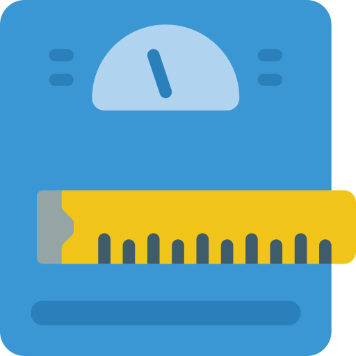

<ion-header [translucent]="true">
  <ion-toolbar color="secondary">
    <ion-title>
      APP BMI
    </ion-title>
  </ion-toolbar>
</ion-header>

<ion-content class="ion-padding ion-text-center" [fullscreen]="true" color="dark">
    
  <ion-card color="success" class="ion-padding">
    <ion-item color="dark">
      <ion-input label="กรอกน้ำหนัก" placeholder="kg"></ion-input>
    </ion-item>
<br>
    <ion-item color="dark">
      <ion-input label="กรอกส่วนสูง" placeholder="cm"> </ion-input>
    </ion-item>
<br>
  <ion-button size="large" expand="block" color="warning">คำนวน</ion-button>
</ion-card>

<ion-card color="secondary">
<ion-card-header>
<ion-card-subtitle>ผลลัพธ์</ion-card-subtitle>
<ion-card-title>18.5</ion-card-title>
</ion-card-header>
</ion-card>

<ion-card color="danger">
  <ion-card-header>
  <ion-card-subtitle>แปรผล</ion-card-subtitle>
  <ion-card-title>อยู่ในเกณฑ์ปกติ</ion-card-title>
  </ion-card-header>
  </ion-card>

</ion-content>
